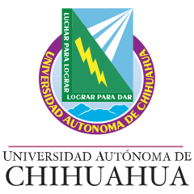
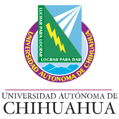

Aporta a los estudiantes en el contexto de los lenguajes de programación como las herramientas fundamentales de aplicación en la creación de programas computacionales y software. La asignatura le ofrece al estudiante el estudio de las características delos tres paradigmas tecnológicos más utilizados: orientado a objetos, funcional y lógico para que adquiera una visión y una metodología para el diseño de sistemas computacionales funcionales, interactivos y seguros, aplicando cualquiera de los paradigmas de una manera sistemática y efectiva para la mejor resolución del problema.
| COMPETENCIAS | DOMINIOS COGNITIVOS | RESULTADOS DE APRENDIZAJE |
|---|---|---|
| El curso promueve las siguientes competencias:
Básicas: COMUNICACIÓN Utiliza diversos lenguajes y fuentes de información para comunicarse efectivamente). TRABAJO EN EQUIPO Y LIDERAZGO Demuestra comportamientos efectivos al o interactuar en equipos y compartir conocimientos, experiencias y aprendizajes para la toma de decisiones y el desarrollo grupal. |
|
Explica los conceptos de la programación orientada a objetos dentro del marco de lenguajes de programación. |
|
SOLUCIÓN DE PROBLEMAS Emplea las diferentes formas de pensamiento para la resolución de problemas aplicando un enfoque sistémico. PROFESIONALES: CIENCIAS FUNDAMENTALES DE LA INGENIERÍA Aporta los fundamentos teórico científicos, metodológicos y de herramientas para la solución de problemas en ingeniería. |
|
Establece las características de la programación funcional dentro del marco de lenguajes de programación. |
|
ESPECÍFICAS: FUNDAMENTOS DE CIENCIAS DE LA COMPUTACIÓN Los fundamentos de ciencias de la computación aportan el conocimiento, metodologías, técnicas y herramientas para el desarrollo de sistemas de cómputo. |
|
Determina las características principales de la programación lógica dentro del marco de referencia de los lenguajes de programación. |
| Unidades de aprendizaje | 1 | 2 | 3 | 4 | 5 | 6 | 7 | 8 | 9 | 10 | 11 | 12 | 13 | 14 | 15 | 16 |
|---|---|---|---|---|---|---|---|---|---|---|---|---|---|---|---|---|
| I. PARADIGMA DE PROGRAMACIÓN ORIENTADA A OBJETOS | ||||||||||||||||
| II. PARADIGMA DE PROGRAMACIÓN FUNCIONAL | ||||||||||||||||
| III PARADIGMA DE PROGRAMACIÓN LÓGICA |